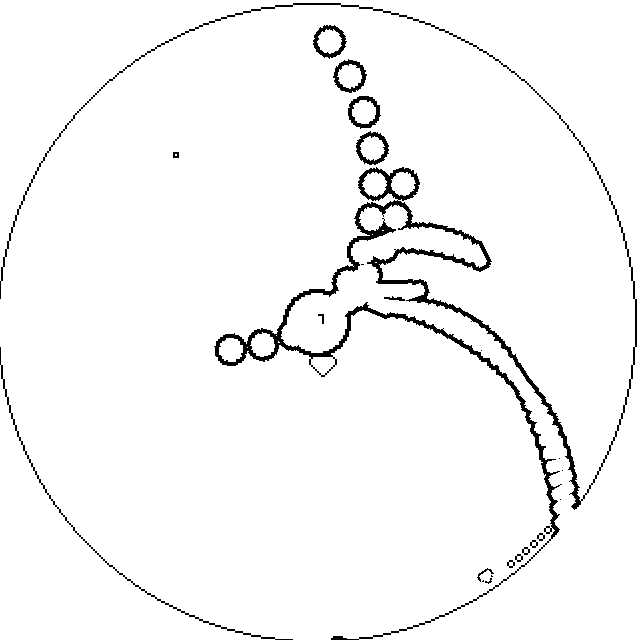
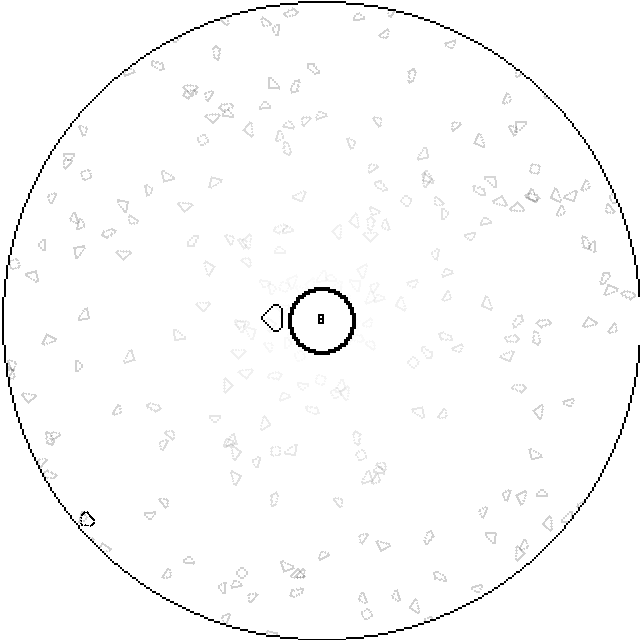
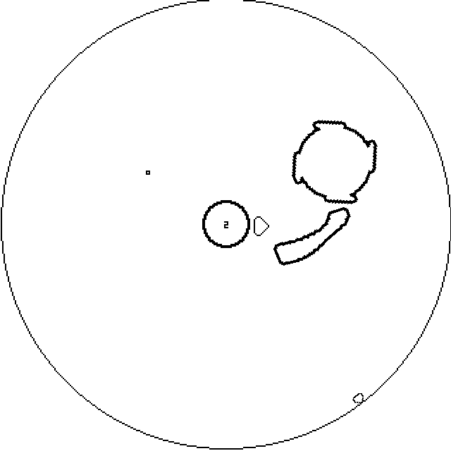

Chronohell

Some gameplay.
Made in 72 hours for Ludum Dare 51 "Every 10 Seconds"
> Play here!Chronohell is a simple game I had the idea to make midway into the jam period. All you have to do is survive the wave of projectiles coming at you every 10 seconds.



Status: Released
> Play here! < Back to works